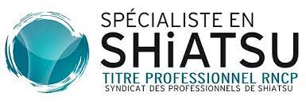

L'aspect fondamental dans le Iokaï shiatsu est : "comment entrer en contact avec l'humain, la vie".
Séance de shiatsu
La séance de shiatsu est un moment de rééquilibrage et d'auto guérison physique et psychique...

Spécialiste en shiatsu
Je vous reçois à Marseille, dans un lieu calme, dédié à la reprise de contact avec vous-même, à la détente et au soin de soi-même. J'effectue un bilan énergétique global puis j'entreprends le soin par la pression sur les méridiens impliqués; canaux énergétiques qui traversent le corps entier. Des étirements et mobilisations d'articulations ou zones du corps peuvent aider à ouvrir les passages, détendre les muscles et relancer la circulation énergétique, lymphatique et sanguine globale, nécessaire au bon fonctionnement du métabolisme.
La pratique
Les 12 méridiens principaux sont en lien avec toutes les fonctions organiques de notre corps. Le shiatsu permet de restaurer un équilibre plus naturel de l'organisme et ainsi retrouver une meilleure santé. Au Japon, on dit : ‘Le shiatsu est semblable à l’affection maternelle, la pression des mains fait jaillir la vie.’


Céline Jouenne
Je me suis formée à l'école Iokaï à Marseille. Mon enseignant principal, Thierry Camagie est l'élève de Kanuzori Sasaki Sensei, disciple direct de Masunaga Sensei.

Certifiée European Iokai Meridian Shiatsu Association (EISA).
Le ministère du travail, de l’emploi et de la formation professionnelle a reconnu notre profession sous la dénomination de «spécialiste en shiatsu ».

Céline Jouenne
Certifiée European Iokaï Meridian Shiatsu Association EISA - Certifiée par le Syndicat Professionnel du Shiatsu SPS
Réservez votre séance
Certifiée par le Syndicat Professionnel du Shiatsu (SPS)
La formation du Iokai Shiatsu France est reconnue par le Syndicat Professionnel de Shiatsu et a reçu la reconnaissance par le RNCP.